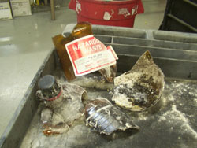

Piranha Solution Explosion
A four liter bottle of Piranha waste solution exploded in the Environmental Quality Management Center. It was unclear exactly what caused the explosion, but it was theorized that the contents were not mixed well or had contamination in the bottle. The transporting of the bottle to the facility added enough energy to cause more off-gassing and over pressurize the container. No one was injured during the explosion. If piranha solution is going
to be used in the laboratory, it is recommended that the bottle be capped
with a vented lid. These lids allow the container to “breath”.
This will help prevent over pressurization of the container. These lids
are also leak-proof. These lids can be obtained from Environmental Management,
323-6280. |

|